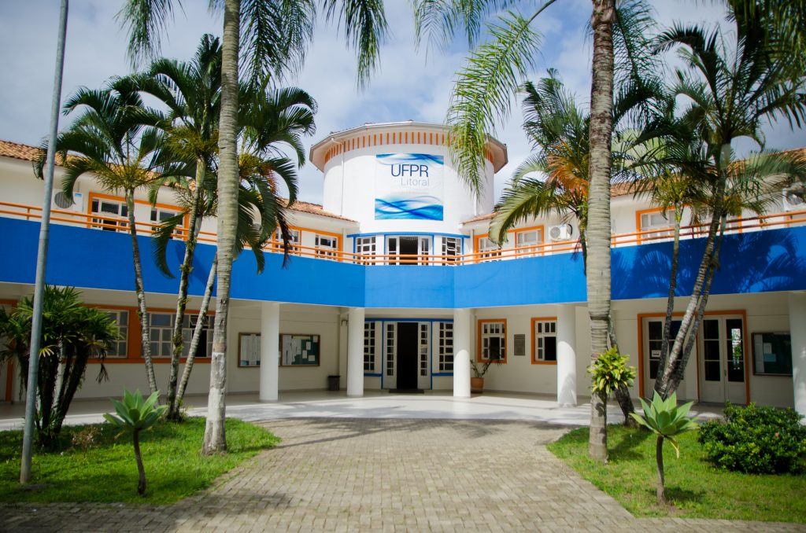

Sobre min
Olá eu sou o Adriano
Muito prazer, meu nome completo é Adriano Enio Contesini , Nasci em 1990
Carinha de 20 anos sempre , atualmente moro em Curitiba, Paraná ,porem sou do Litoral
da Cidade de Pontal do Paraná , Shangri-lá , como vocês podem ter visto na página "formação" estudo
Analise e desenvolvimento de Sistemas na Uninter e estou ansioso pelos próximos desafios que viram.

Já Cursei Ciências
Clique aqui pra Saber mais
Entre 100 melhores na Apple
Clique aqui pra Saber mais

Eu Nerd??
Clique aqui pra Saber mais